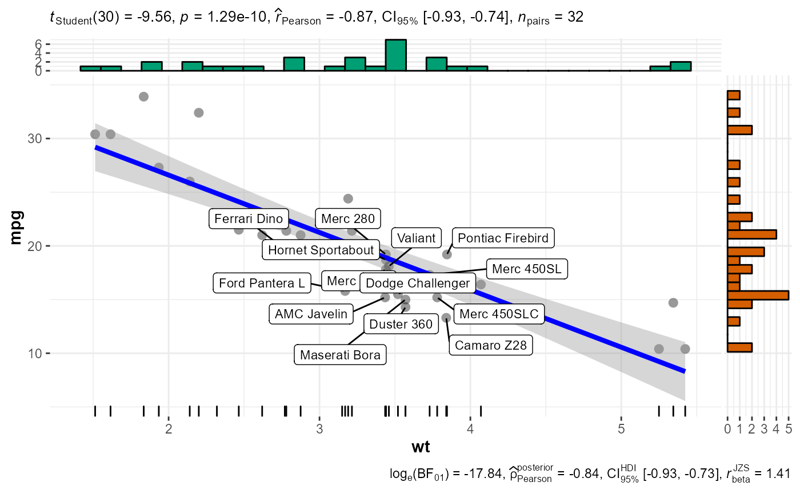

ggscatterstats.RdScatterplots from ggplot2 combined with marginal
histograms/boxplots/density plots with statistical details added as a
subtitle.
ggscatterstats(data = NULL, x, y, xlab = NULL, ylab = NULL, line.size = 1.5, line.color = "blue", marginal = TRUE, marginal.type = "histogram", marginal.size = 5, margins = c("both", "x", "y"), width.jitter = NULL, height.jitter = NULL, xfill = "#009E73", yfill = "#D55E00", centrality.para = NULL, type = "pearson", results.subtitle = NULL, title = NULL, caption = NULL, nboot = 100, beta = 0.1, k = 3, axes.range.restrict = FALSE, ggtheme = ggplot2::theme_bw(), messages = TRUE)
| data | Dataframe from which variables specified are preferentially to be taken. |
|---|---|
| x | A vector containing the explanatory variable. |
| y | The response - a vector of length the number of rows of |
| xlab | Label for |
| ylab | Label for |
| line.size | Size for the regression line. |
| line.color | color for the regression line. |
| marginal | Decides whether |
| marginal.type | Type of marginal distribution to be plotted on the axes
( |
| marginal.size | Integer describing the relative size of the marginal
plots compared to the main plot. A size of |
| margins | Character describing along which margins to show the plots.
Any of the following arguments are accepted: |
| width.jitter | Degree of jitter in |
| height.jitter | Degree of jitter in |
| xfill | color fill for x axis distribution (default: |
| yfill | color fill for y axis distribution (default: |
| centrality.para | Decides which measure of central tendency ( |
| type | Type of association between paired samples required
(" |
| results.subtitle | Decides whether the results of statistical tests are to be displayed as subtitle. |
| title | The text for the plot title. |
| caption | The text for the plot caption. |
| nboot | Number of bootstrap samples for computing effect size (Default:
|
| beta | bending constant (Default: |
| k | Number of decimal places expected for results. |
| axes.range.restrict | Logical decides whether to restrict the axes values
ranges to min and max values of the |
| ggtheme | A function, |
| messages | Decides whether messages references, notes, and warnings are
to be displayed (Default: |
https://indrajeetpatil.github.io/ggstatsplot/articles/ggscatterstats.html
# to get reproducible results from bootstrapping set.seed(123) # simple function call with the defaults ggstatsplot::ggscatterstats( data = datasets::mtcars, x = wt, y = mpg, type = "np" )#> Warning: This function doesn't return ggplot2 object and is not further modifiable with ggplot2 commands.#>